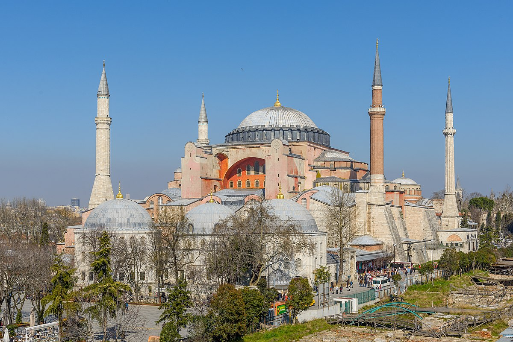

GIORNO 1
Quartiere Sultanahmet e Hagia Sophia
|
Cari ospiti, benvenuti a Costantinopoli, una città intrisa di storia e cultura millenaria. Oggi iniziamo il nostro viaggio nel cuore storico della città, il Quartiere Sultanahmet. Queste strade antiche pulsano ancora della vita e delle storie dei secoli passati. Attraverso le stradine strette e pittoresche, avremo l'opportunità di immergerci nell'atmosfera unica di questa città così ricca di fascino e mistero. |
|
|  |
Il nostro primo punto di visita è la Hagia Sophia, un vero gioiello architettonico che testimonia l'ingegno e la grandiosità dell'Impero Bizantino. Questa maestosa basilica, ora museo, rappresenta una sintesi straordinaria di culture e religioni, con le sue cupole imponenti e i suoi mosaici preziosi. Attraverso la visita guidata, avremo l'opportunità di scoprire i segreti nascosti di questo monumento iconico e di comprendere il suo significato nel contesto storico e culturale di Costantinopoli. |